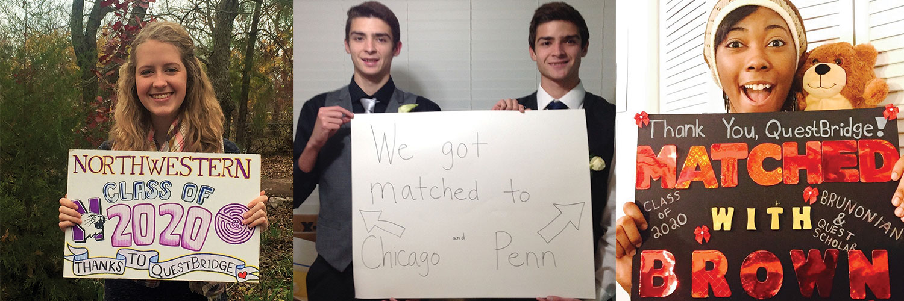

Ripped Pants, Trampolines, and Questbridge Jude Batoon
Jude Batoon
I will never forget the night after my Junior Prom. No, not because I ripped the pants of my rental tuxedo while trying (and succeeding, if I may add) to land a front flip on my friend’s trampoline at 12’o clock in the night. It remains unforgettable because that was the night when my entire worldview as well as my own perception of myself was shaken up. That was the night which I received the message from Questbridge telling me that I was a College Prep Scholar. Questbridge is an organization that gives low-income students that excel in school the opportunities to attend prestigious, high-ranking colleges that they may not have thought was possible for them due to financial and other circumstances. I was in that pool of students. I never even considered schools such as Yale, Brown, and top colleges such as these, I never even looked at those colleges because I believed they were too out-of-reach for me to attain. Before Questbridge, I could not even see myself in any of the colleges Questbridge partners with, it was all fantasy and wishful thinking in my mind. It was my belief only the upper classes could ever be accepted into these colleges, that it would take a miracle for me to be considered. However, Questbridge helped make it a reality in my mind, I am looking at colleges I only dreamed of being accepted in.
I remember first opening the email about Questbridge. I have never heard about the program nor of anyone in my school participating in it. I took a stab in the dark and told myself that it's worth the shot. The following weeks, I spent filling out the application, spending my free time on my essay and short answer response. Finally, I was satisfied with my application and submitted it. After then, it was never really prominent in my mind, just a thought constantly in the back of my mind.
“I wonder who decides if I get in or not...”
“Maybe I’ll get in? Maybe not, they should have sent it to thousands of other students.”
“I don’t know, I don’t think I’m unique enough, I’m just like all the other kids that probably also sent apps in, I’ll pale in comparison to them…”
These were just a sample of the nagging thoughts that would float into my mind occasionally. At this time, I really did not believe I would be accepted in, that there were plenty of other students who excelled further than I ever had and would be placed above me.
The moment when I saw the brief sentence saying that there had been an update to my application status seemed to cause the entire world to freeze. I stood in my friend’s kitchen, wearing the borrowed jogging pants of her dad, frozen. I cradled my phone with both hands, fixated on the small message. I couldn’t bring myself to tap the link that would bring me to the page which would either bear a new door opening for me to walk through or a harsh reality check that would cement all my doubts. I took a deep breath and readied myself for any disappointment. I tapped the screen of my phone and shut my eyes as it was loading. I steadied myself and opened my eyes to read what Questbridge had thought of me and my application.
There it was. A gold star with “Congratulations!” in bold letters above it. I could hardly believe it. It was one of the few moments in my life when I had seriously questioned if I was in a lucid state of dreaming or not, as I felt my legs go a little numb. I celebrated with my friends, after I told them what it Questbridge is exactly and what they do. For the rest of that night, I enjoyed myself, schooled some friends in Just Dance, and went star gazing on the very trampoline I tore the pants on earlier that night. As I laid there, gazing at the stars, I knew that everything had just changed. I knew that there were so many new opportunities for me and that I couldn’t waste a single one. I knew that a whole new world had just suddenly been revealed to me, Aladdin-style minus the flying magic carpet and the comic-relief genie. I wondered about my new future, where I will end up, and how I will get there. As I am currently preparing for Questbridge’s other program, the National College Match, I can’t help but reflect upon it all, how my journey was completely taken off course and onto a different path. And it all started there, that night, with a ripped pair of pants, a trampoline, and some friends. I wouldn’t have wished for it to be any other way. Well, maybe except for the pant’s $60 fee...